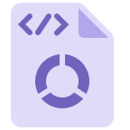

Kariera
Opis Stanowiska
-
RozwójMateriałów/Ogniw (Cell)
- Projektowanie i stosowanie lepiszczy, środków przewodzących, kolektorów prądu oraz innych materiałów oprócz czterech kluczowych surowców
- Synteza i analiza materiałów organicznych/nieorganicznych oraz badanie właściwości materiałów metalicznych/polimerowych
- Projektowanie końcowych produktów ogniw i rozwój technologii akumulatorów nowej generacji, ich wdrażania i technologii procesowych
-

Planowanie/Zarządzanie R&D
- Zadania strategiczne i planistyczne obejmujące rozwój strategii R&D oraz przegląd i zarządzanie technologiami projektów
- Opracowanie strategii portfela open innovation
-

Rozwój Pack/BMS
- Projektowanie produktów modułów/pakietów baterii oraz rozwój technologii i części komponentów
- Projekt mechaniczny, projekt konstrukcyjny, projekt optymalizacji, projekt procesu itp.
- Algorytm sterowania akumulatorem, rozwój obwódu zabezpieczającego akumulator SW/HW, rozwój części elektronicznych itp.
-

DX
- Usprawnianie procesów, produkcji i jakości przy użyciu technologii AI i big data
- Identyfikacja projektów inteligentnej produkcji i opracowanie modeli przyspieszających wdrażanie inteligentnych fabryk
- Analiza problemów biznesowych i opracowywanie modeli predykcyjnych
-

Zarządzanie patentami
- Ustanowienie i wzmocnienie krajowego i zagranicznego systemu strategii patentowej
- Spory patentowe/licencje/umowy, wzmocnienie portfela patentów i analiza ryzyka
- Projekt, zgłoszenie i rejestracja znaku towarowego itp.
-

Rozwój Platform
- Rozwój webowej/aplikacyjej, Rozwój danych w chmurze i platformy MLOps, Rozwój urządzeń IoT itp.
-

Rozwój
- Projektowanie i rozwój zoptymalizowanych połączeń elektrycznych i systemów ochrony dla konstrukcji ogniw, modułów i szaf (rack)
- Projektowanie i rozwój zoptymalizowanego sprzętu systemowego, aby zapewnić oczekiwaną wydajność akumulatorów
- Wykonywanie symulacji komputerowych, takich jak analiza termiczno-płynowa, proszkowa i strukturalna w celu wirtualnej walidacji
- Analiza organiczna/nieorganiczna, analiza kształtu, analiza obrazu, analiza powierzchni itp.
-

Produkcja / zarządzanie produkcją
- Produkcja/wydajność/wskaźnik operacyjny/kompleksowe zarządzanie i poprawa efektywności obiektu itp.
- Produkcja/wydajność/wskaźnik operacyjny/kompleksowe zarządzanie i poprawa efektywności obiektu itp.
-

Technologia procesów/komponentów
- Stabilizacja produkcji i zapewnienie technologii masowej produkcji
- Modernizacja systemów w celu zwiększenia produktywności
- Weryfikacja i optymalizacja dopuszczalnych limitów dla procesów baterii
-

Technologia maszyn (sprzętu)
- Opracowanie wysokowydajnego i nowatorskiego sprzętu (elektrody, montaż, formowanie, logistyka, pakiety itp.) oraz jego wdrażanie na liniach rozwojowych
- Przewidywanie/inteligencja awarii sprzętu, rozwój technologii automatyzacji itp.
-

Infrastruktura produkcyjna
- Zarządzanie pozwoleniami budowlanymi i projektowaniem, nadzór nad inwestycjami, harmonogramem i jakością projektów budowlanych
- Promowanie działań na rzecz zrównoważonego rozwoju oraz rozwój nowych technologii energetycznych w celu zwiększenia konkurencyjności sprzętu
-

Strategia jakości
- Entwicklung/Massenprodukt und Kundenqualitätskontrolle/Garantie
- Qualitätsüberwachung und -verbesserung im In- und Ausland
- Etablierung/Implementierung von Qualitätsstrategie und -system
-

Zapewnienie jakości
- Prowadzenie testów i kontroli jakości dla opracowanych produktów, komponentów partnerów i produkcji masowej
- Zapewnienie absolutnej jakości zgodnej z międzynarodowymi standardami i regulacjami
-

Sales planning and management
- Develop supply plans based on market demand analysis
- Manage profitability through performance and risk management
-

B2B Sales
- Enter distribution channels and manage them to expand market share
- Manage orders, development, and mass production logistics for each customer
- Conduct sales activities based on pricing and promotion strategies
-

Marketing Strategy
- Establish integrated marketing strategies in line with corporate business plans and marketing goals
- Develop corporate brand (CI) and product brand (BI) frameworks
-

Marketing Communication
- Deliver corporate and product information to identify potential customers
- Enhance corporate value and customer relationships through effective marketing mix and product promotion activities
-

Strategia biznesowa
- Opracowywanie strategii biznesowych poprzez monitorowanie otoczenia biznesowego
- Przegląd kluczowych zagadnień w działalności w celu zaproponowania wniosków i rozwiązań
- Strategie przyszłości i tworzenie New Biz. Plan, strategiczne wsparcie inwestycji itp.
-

Innowacje w zarządzaniu
- Promowanie działań innowacyjnych w celu zwiększenia wartości z perspektywy klienta
- Tworzenie wyników biznesowych poprzez identyfikację i realizację projektów innowacyjnych
-

Rozwój biznesu
- Rozwój i realizacja znaczących możliwości biznesowych w oparciu o analizę i prognozy otoczenia biznesowego
- Poszukiwanie i identyfikacja nowych możliwości w celu rozwoju nowych obszarów działalności
-

Księgowość/Finanse/IR
- Poprawa stabilności finansowej przedsiębiorstwa, np. rozliczenia finansowe, zarządzanie strukturą finansową i opodatkowanie
- Przeprowadzanie wstępnych ocen ryzyka i analiz wykonalności inwestycji dla stabilnego zarządzania
- Ułatwianie komunikacji wewnętrznej i zewnętrznej w celu wspierania podejmowania trafnych decyzji przez kierownictwo
-

Strategia i planowanie zakupów
- Opracowanie średnio- i długoterminowych strategii zakupowych oraz systemów pracy zgodnych z celami korporacyjnymi
- Zapewnienie stabilnych i konkurencyjnych zdolności zakupowych
-

Zakupystrategiczne i zarządzanie
- Zakupy surowców i komponentów do produkcji masowej
- Źródła pozyskania i zakupy surowców
- Zakupy sprzętu i inwestycji budowlanych
-

Zakupy i zarządzanie rozwojowe
- Zakupy surowców i komponentów na potrzeby rozwoju
-

SCM (Łańcuch dostaw/logistyka)
- Ustalanie globalnych celów dostaw SCP, opracowanie i doskonalenie średnio-/długoterminowych planów zarządzania mocami produkcyjnymi
- Identyfikacja/rozwiązywanie/zarządzanie ryzykiem w zakresie produkcji, jakości, zakupów i materiałów
- Planowanie logistyki i jej optymalizacja
-

BHP
- Poprawa jakości powietrza/wody/problemów środowiskowych związanych energią, zapobieganie wypadkom bezpieczeństwa i czynnikom ryzyka Ustanowienie/eksploatacja systemu reagowania kryzysowego itp.
- Odpowiedź na przepisy dotyczące ochrony środowiska produktu, ustanowienie/działanie systemu zarządzania oraz wzmocnienie kompetencji produktu przyjaznego dla środowiska
- Ustanowienie/działanie powiązanego standardowego systemu zapobiegania chorobom zawodowym i przestrzegania przepisów dotyczących zdrowia
-

Wsparciebiznesu (GA)
- Obsługa udogodnień i usług pracowniczych, tworzenie i zarządzanie środowiskiem biurowym oraz nadzór nad obiektami i wyposażeniem
- Zarządzanie aktywami nieruchomościowymi (zakup, sprzedaż, wynajem itp.), wspieranie działalności biznesowej (zapewnianie lokalizacji i przestrzeni dla nowych podmiotów) oraz zarządzanie wolnymi przestrzeniami w całej firmie
- Standaryzacja działań administracyjnych we wszystkich lokalizacjach globalnych oraz wsparcie przy zakładaniu i stabilizacji nowych podmiotów
-

HR (HRM)
- Opracowanie strategii HR oraz projektowanie i prowadzenie systemów i struktur organizacyjnych HR
- Monitorowanie opinii pracowników (VOE) w celu identyfikacji i rozwiązywania problemów
- Pozyskiwanie najlepszych talentów zgodnych z profilem organizacyjnym
-

HR (Employee Relations)
- Planowanie kwestii związanych z zarządzaniem pracą, zarządzanie ryzykiem związanym z zarządzaniem pracą, wsparcie dla pracy zarządzania pracą.
-

L&D
- Tworzenie ram rozwoju talentów oraz planowanie, opracowywanie i realizacja programów rozwojowych
-

Zespół ds. kultury korporacyjnej
- Budowanie środowiska pracy opartego na wspólnym systemie wartości, które pozwala członkom skupić się na pracy
-

Bezpieczeństwo informacji
- Ustanowienie strategii/polityki bezpieczeństwa informacji oraz globalnego systemu zarządzania bezpieczeństwem informacji
- Diagnoza bezpieczeństwa i ocena ryzyka dla witryn biznesowych, infrastruktury IT i procesów biznesowych
- Reakcja na cybernaruszenia i wycieki, reagowanie na wymogi zgodności (ochrona danych osobowych, RODO itp.)
-

Innowacje biznesowe
- Przeprojektowanie procesu/ustanowienie systemu w celu optymalnego działania
- Udoskonalanie procesów i wdrażanie optymalnych rozwiązań w celu realizacji celów zarządzania ESG
- Tworzenie i obsługa systemu reagowania infrastruktury IT zapewniającego ciągłość działania biznesu
-

Dział prawny
- Doradztwo w kwestiach prawnych, opiniowanie umów, świadczenie usług prawnych
- Inspekcja i edukacja w zakresie ryzyka braku zgodności, funkcjonowanie sekretariatu Zarządu, tworzenie i funkcjonowanie polityki uczciwego handlu
- Prewencyjne reagowanie na ryzyka prawne związane z prowadzeniem działalności gospodarczej, odszkodowanie (cywilne), rozporządzanie organami administracyjnymi (administracyjne), kwestie karne (karne) itp.
-

Dział audytu
- Tworzenie kultury organizacyjnej opartej na Jeong-Do Management oraz jego promocja/szkolenia
- Dochodzenie w sprawie zgłoszeń o korupcji itp.
- Diagnoza efektywności biznesowej i adekwatności pracy
-

Wsparciepolityk/procedur
- Wspieranie rozwiązań głównych problemów biznesowych poprzez analizę polityk/procedur
- Zmiany klimatyczne/wkład społeczny/wspólne planowanie wzrostu i zarządzanie realizacją
- Strategia ESG i zarządzanie pracą komitetu ESG
-

Reklama/Marketing
- Zwiększanie wartości firmy poprzez rozpowszechnianie filozofii firmy i polityki zarządzania oraz PR
- Ustanowienie strategii zintegrowanej komunikacji marketingowej w całej firmie oraz planowanie/realizowanie działań marketingowych BTL
- Tworzenie strategii marki, reklama i obsługa komunikacji cyfrowej